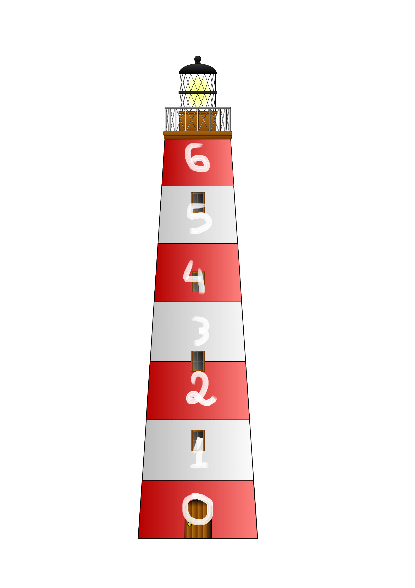
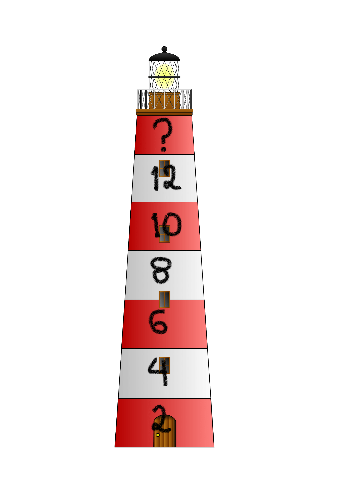

O Φάρος
Μπορούμε στο πιο κάτω σχήμα να δούμε έναν φάρο με αριθμημένα τα οριζόντια κομμάτια του από το 1 - 6.
Παρατηρούμε ότι το τελευταίο κομμάτι - το ψηλότερο σημείο - έχει τον αριθμό 6. Επίσης βλέπουμε ότι σε κάθε κομμάτι προς τα πάνω γίνεται πρόσθεση κατά 1.
Στο παρακάτω σχήμα ποιος θα είναι ο τελευταίος αριθμός στο ψηλότερο σημείο του φάρου σύμφωνα με το προηγούμενο παράδειγμα αλλά και το μοτίβο που βλέπεις στους αριθμούς;
Παρατηρούμε ότι οι υπάρχει πρόσθεση των αριθμών όσο ανεβαίνουν προς τα πάνω κατά 2.
Επομένως το αποτέλεσμα σύμφωνα με το μοτίβο θα είναι 14
ο εντοπισμός μοτίβων βοηθάει στην λύση προβλημάτων ακολουθώντας ένα παράδειγμα από κάποιο ήδη λυμένο πρόβλημα που μοιάζει.